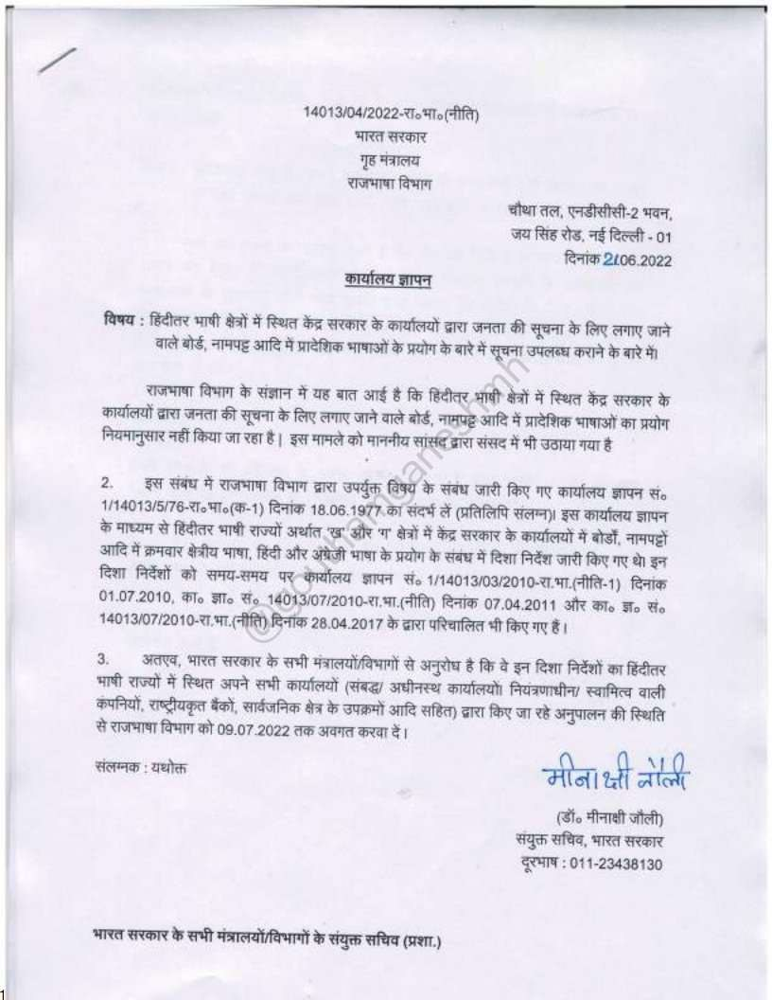

ವಿಧಾನ
ಈ ಅಭಿಯಾನದ ಬಗ್ಗೆ
ಕರ್ನಾಟಕದಲ್ಲಿರುವ ಕೇಂದ್ರ ಸರ್ಕಾರಿ ಕಚೇರಿಗಳು ತಮ್ಮ ಫಲಕ ಮತ್ತು ನಾಮಫಲಕಗಳಲ್ಲಿ ಕನ್ನಡ ಬಳಸುತ್ತಿವೆಯೇ ಎಂಬುದನ್ನು ಮಾಹಿತಿ ಹಕ್ಕು ಕಾಯ್ದೆಯ ಮೂಲಕ ಪರಿಶೀಲಿಸುತ್ತಿರುವ ನಾಗರಿಕ ಅಭಿಯಾನ.
ಅಭಿಯಾನ
2022ರ ಜೂನ್ನಲ್ಲಿ ಕೇಂದ್ರ ಗೃಹ ಸಚಿವಾಲಯದ ರಾಜಭಾಷಾ ಇಲಾಖೆ ಕಚೇರಿ ಜ್ಞಾಪನ ಸಂಖ್ಯೆ 14013/04/2022 ಹೊರಡಿಸಿತು. ಹಿಂದಿಯೇತರ ರಾಜ್ಯಗಳಲ್ಲಿರುವ ಕೇಂದ್ರ ಸರ್ಕಾರಿ ಕಚೇರಿಗಳು ಸಾರ್ವಜನಿಕ ಫಲಕ ಮತ್ತು ನಾಮಫಲಕಗಳಲ್ಲಿ ನಿಯಮದಂತೆ ಪ್ರಾದೇಶಿಕ ಭಾಷೆಯನ್ನು ಬಳಸುತ್ತಿಲ್ಲ ಎಂದು ಅದು ಎಲ್ಲ ಸಚಿವಾಲಯ ಮತ್ತು ಇಲಾಖೆಗಳಿಗೆ ತಿಳಿಸಿ, ತಮ್ಮ ಕಚೇರಿಗಳ ಪಾಲನೆಯ ಸ್ಥಿತಿಯನ್ನು ವರದಿ ಮಾಡುವಂತೆ ಕೇಳಿತು.
2026ರ ಜುಲೈನಿಂದ ಈ ಅಭಿಯಾನ ಕರ್ನಾಟಕದಲ್ಲಿರುವ ಕೇಂದ್ರ ಸಚಿವಾಲಯ ಮತ್ತು ಇಲಾಖೆಗಳು, ರೈಲ್ವೆ ವಲಯ ಮತ್ತು ವಿಭಾಗಗಳು, ಬ್ಯಾಂಕುಗಳು, ವಿಮಾ ಸಂಸ್ಥೆಗಳು, ಸಾರ್ವಜನಿಕ ಉದ್ದಿಮೆಗಳು, ನ್ಯಾಯಮಂಡಳಿಗಳು ಮತ್ತು ಇತರ ಕೇಂದ್ರ ಕಚೇರಿಗಳಿಗೆ ಮಾಹಿತಿ ಹಕ್ಕು ಅರ್ಜಿ ಸಲ್ಲಿಸಿ, ಆ ಆದೇಶದ ಕುರಿತು ಏನು ಮಾಡಿದ್ದೀರಿ ಎಂದು ಕೇಳಿತು: ಹೊರಡಿಸಿದ ಸುತ್ತೋಲೆಗಳು, ಕೈಗೊಂಡ ಕ್ರಮ, ನಡೆಸಿದ ತಪಾಸಣೆ, ಸರಿಪಡಿಸುವ ಕ್ರಮ, ಮತ್ತು ಮೇಲ್ವಿಚಾರಣೆಯ ಹೊಣೆ ಯಾರದು.
ಬಂದ ಉತ್ತರಗಳನ್ನು ಪ್ರತಿಯೊಂದನ್ನೂ ಓದಿ ಪರಿಶೀಲಿಸಿದ ನಂತರ, ಬಂದಂತೆಯೇ, ಒಂದೊಂದಾಗಿ ಇಲ್ಲಿ ಪ್ರಕಟಿಸಲಾಗುತ್ತದೆ. ಪ್ರತಿ ಉತ್ತರಕ್ಕೂ ಕನ್ನಡ ಮತ್ತು ಇಂಗ್ಲಿಷ್ನಲ್ಲಿ ಸಂಕ್ಷಿಪ್ತ ವಿವರಣೆ ಮತ್ತು ಪ್ರತ್ಯೇಕ ಚಿತ್ರ ಇರುತ್ತದೆ. ಹಿಂದಿಯಲ್ಲಿರುವ ದಾಖಲೆಗಳ ಪಕ್ಕದಲ್ಲಿ ಇಂಗ್ಲಿಷ್ ಯಂತ್ರ ಅನುವಾದವನ್ನೂ ನೀಡಲಾಗುತ್ತದೆ. ಅಭಿಯಾನವನ್ನು X ನಲ್ಲಿ ಘೋಷಿಸಲಾಗಿತ್ತು; ಉತ್ತರಗಳು ಏನು ಹೇಳುತ್ತವೆ ಎಂಬ ಸಾರಾಂಶದೊಂದಿಗೆ ಅದು ಮುಕ್ತಾಯವಾಗುತ್ತದೆ.
ಆದೇಶ ಏನು ಹೇಳುತ್ತದೆ
21.06.2022ರಂದು ಜಂಟಿ ಕಾರ್ಯದರ್ಶಿ ಡಾ. ಮೀನಾಕ್ಷಿ ಜಾಲಿ ಅವರ ಸಹಿಯೊಂದಿಗೆ ಹೊರಬಂದ ಈ ಜ್ಞಾಪನ, 1977ರ ಆದೇಶವನ್ನು (OM ಸಂಖ್ಯೆ 1/14013/5/76-OL(A-1), 18.06.1977) ನೆನಪಿಸುತ್ತದೆ. 'ಖ' ಮತ್ತು 'ಗ' ಪ್ರದೇಶದ ರಾಜ್ಯಗಳಲ್ಲಿರುವ ಕೇಂದ್ರ ಕಚೇರಿಗಳ ಫಲಕ ಮತ್ತು ನಾಮಫಲಕಗಳಲ್ಲಿ ಕ್ರಮವಾಗಿ ಪ್ರಾದೇಶಿಕ ಭಾಷೆ, ಹಿಂದಿ ಮತ್ತು ಇಂಗ್ಲಿಷ್ ಬಳಸಬೇಕು ಎಂಬುದು ಆ ಆದೇಶ; 2010, 2011 ಮತ್ತು 2017ರಲ್ಲಿ ಅದನ್ನು ಮತ್ತೆ ಸುತ್ತೋಲೆ ಮಾಡಲಾಗಿತ್ತು. ಅದು ಪಾಲನೆಯಾಗುತ್ತಿಲ್ಲ, ಸಂಸತ್ತಿನಲ್ಲೂ ಈ ವಿಷಯ ಪ್ರಸ್ತಾಪವಾಗಿದೆ ಎಂದು ಹೇಳಿ, ಹಿಂದಿಯೇತರ ರಾಜ್ಯಗಳಲ್ಲಿರುವ ತಮ್ಮ ಎಲ್ಲ ಕಚೇರಿಗಳ (ಅಧೀನ ಕಚೇರಿಗಳು, ನಿಯಂತ್ರಣದ ಕಂಪನಿಗಳು, ರಾಷ್ಟ್ರೀಕೃತ ಬ್ಯಾಂಕುಗಳು ಮತ್ತು ಸಾರ್ವಜನಿಕ ಉದ್ದಿಮೆಗಳು ಸೇರಿ) ಪಾಲನೆಯ ಸ್ಥಿತಿಯನ್ನು 09.07.2022ರೊಳಗೆ ತಿಳಿಸುವಂತೆ ಎಲ್ಲ ಸಚಿವಾಲಯ ಮತ್ತು ಇಲಾಖೆಗಳಿಗೆ ಸೂಚಿಸುತ್ತದೆ.
ಆದೇಶದ ಪ್ರತಿ
ಇದು Google Translate ಮಾಡಿದ ಯಂತ್ರ ಅನುವಾದ, ಓದಲು ಅನುಕೂಲವಾಗಲೆಂದು ಮಾತ್ರ. ತಪ್ಪುಗಳಿರಬಹುದು. ಅಧಿಕೃತವಾದುದು ಮೂಲ ಹಿಂದಿ ದಾಖಲೆ ಮಾತ್ರ.

↓ ಮೂಲ ಪ್ರತಿ ಡೌನ್ಲೋಡ್
14013/04/2022-National Policy (Policy) Government of India Home Ministry Department of Official Language
4th Floor, NDCC-2 Building, Jai Singh Road, New Delhi - 01 Date 21.06.2022
Office memorandum
Subject: Regarding providing information about the use of regional languages in the boards, name plates etc. installed by the Central Government offices located in non-Hindi speaking areas for public information.
It has come to the notice of the Department of Official Language that regional languages are not being used as per the rules in the boards, name plates etc. installed by the Central Government offices located in non-Hindi speaking areas for public information. This matter has also been raised in the Parliament by the Honorable MP.
2. In this regard, refer to the Office Memorandum No. 1/14013/5/76-RHA(A-1) dated 18.06.1977 issued by the Department of Official Language regarding the above mentioned subject (copy attached). Through this office memorandum, guidelines were issued regarding the use of regional language, Hindi and English language respectively in boards, name plates etc. in the central government offices in non-Hindi speaking states i.e. 'B' and 'C' regions. These guidelines are updated from time to time vide Office Memorandum No. 1/14013/03/2010-R.A.(Policy-1) dated 01.07.2010, O.M. No. 14013/07/2010-R.A.(Policy) dated 07.04.2011 and O.M. No. 14013/07/2010-National Policy (Policy) dated 28.04.2017.
3. Therefore, all the Ministries/Departments of the Government of India are requested to inform the Department of Official Language by 09.07.2022 about the status of compliance of these guidelines by all their offices (including attached/subordinate offices/controlled/owned companies, nationalized banks, public sector undertakings etc.) located in non-Hindi speaking states.
Attachment: As per
(Dr. Meenakshi Jolly) Joint Secretary, Government of India Tel: 011-23438130
Joint Secretaries (Admn.) of all Ministries/Departments of the Government of India
ವಿಧಾನ
ಪ್ರತಿ ಅರ್ಜಿಯೂ OM ಸಂಖ್ಯೆ 14013/04/2022 ಕುರಿತು ಒಂದೇ ಐದು ಪ್ರಶ್ನೆಗಳನ್ನು ಕೇಳಿತು: ಅದರಡಿ ಹೊರಡಿಸಿದ ಸುತ್ತೋಲೆಗಳು, ಫಲಕಗಳಲ್ಲಿ ಕನ್ನಡ ಬಳಕೆಗೆ ಕೈಗೊಂಡ ಕ್ರಮ, ತಪಾಸಣಾ ವರದಿಗಳು, ಅನುಸರಣೆ ಇಲ್ಲದೆಡೆ ಸರಿಪಡಿಸುವ ಕ್ರಮ, ಮತ್ತು ಮೇಲ್ವಿಚಾರಣೆಯ ಹೊಣೆ ಹೊತ್ತ ಅಧಿಕಾರಿ.
ಅಧಿಕಾರಿಗಳ ಹೆಸರು, ಹುದ್ದೆ, ಕಚೇರಿ ವಿಳಾಸ ಮತ್ತು ಕಚೇರಿಯ ಸಂಪರ್ಕ ವಿವರಗಳು ಮಾಹಿತಿ ಹಕ್ಕು ಕಾಯ್ದೆಯಡಿ ಸಾರ್ವಜನಿಕ ಮಾಹಿತಿ; ಅವುಗಳನ್ನು ಬಂದಂತೆಯೇ ಉಳಿಸಲಾಗಿದೆ.